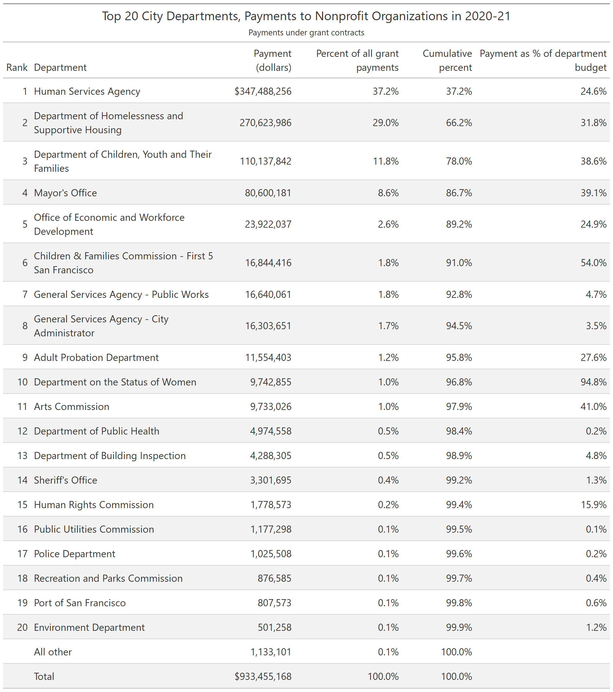
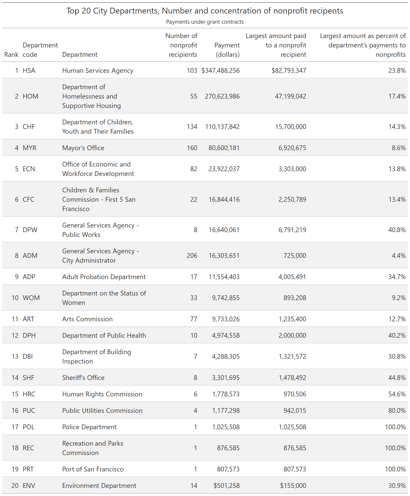
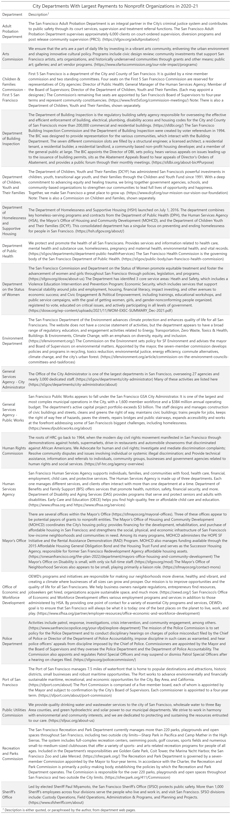
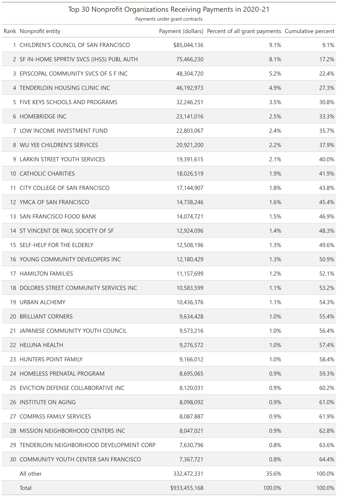
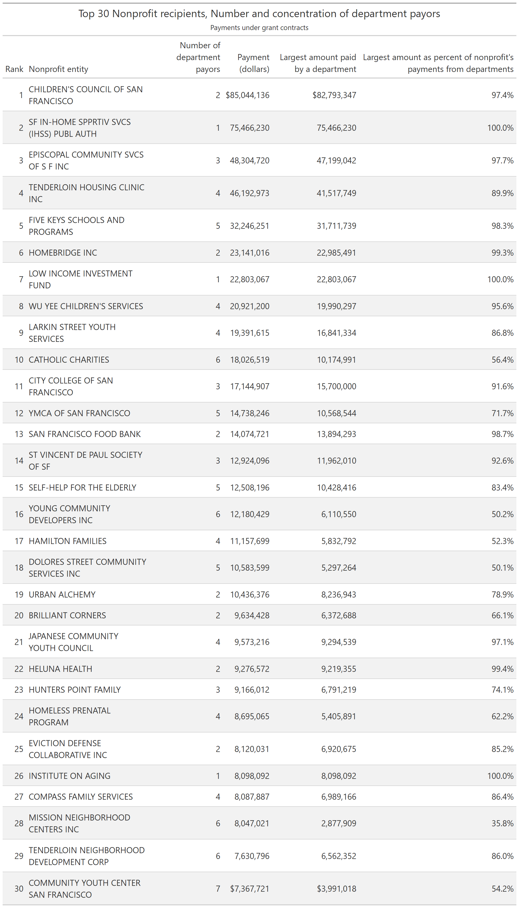
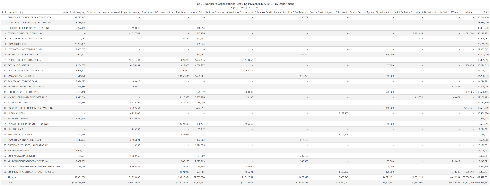
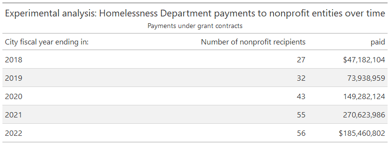

Payments by the City and County of San Francisco to Nonprofit Organizations
1 Highlights
The City of San Francisco spent approximately $933 million on grants to nonprofit organizations in its 2020-21 fiscal year, according to data from the city controller.
The top five departments accounted for 89 percent of grants to nonprofits. Three of these departments accounted for more than $100 million each: Human Services ($347 million), Homelessness Services ($271 million), and Children, Youth and Their Families ($110 million).
Departments heavily involved in delivery of social services to children and the needy tend to spend a large share of their budget on payments to nonprofit organizations - generally 25 percent or more. Departments that focus on administrative services and more-technical matters typically spend 5 percent or less of their budget on payments to nonprofits. There is little middle ground.
The General Services Agency - City Administrator, which conducts centralized purchasing among other things contracted with more than 200 nonprofits, although the aggregate spending amount was relatively small. Departments involved in delivering services to children and the needy generally contracted with dozens, or even more than 100, nonprofit agencies.
More than 540 nonprofit organizations received city funds. The top five nonprofit entities receiving grant payments accounted for 30.8 percent of grants. The top three nonprofit recipients of city funds were:
The Children’s Council of San Francisco, which focuses on supporting child care and early childhood education, received $85 million, or 9.1 percent of the total – the most of any nonprofit agency.
The San Francisco In-Home Supportive Services (IHSS) Public Authority, a quasi-governmental public agency established by San Francisco ordinance that provides and promotes consumer-directed in-home support, received the next most, at $75 million (8.1 percent).
Episcopal Community Services of San Francisco, which provides support to homeless and very low-income people, received $48 million (5.2 percent).
Although many nonprofits receive funding from more than one city department, most receive the vast majority of their city funds from a single department.
The city controller’s data provides very little information on the uses of these funds. However, individual city departments maintain additional information on the purposes of specific grant funds. The Department of Children, Youth and Their Families provided data on their grant funded programs and are available in several forms, as discussed below.
2 Introduction
Nonprofit organizations play an important role in delivering services and helping the needy in San Francisco. This report presents and analyzes information on the city’s payments to nonprofit organizations for the 2020-21 city fiscal year, ending June 30, 2021.1
The sections below:
Describe data on payments to nonprofits,
List the city departments with greatest payments to nonprofits,
List the nonprofit organizations that receive the greatest payments,
Present a cross-tabulation of payments to major nonprofit organizations by major city departments.
The appendix provides tables on payments by all departments and nonprofit organizations, in a sortable format. The appendix also presents data from the Department of Children, Youth, and Their Families (DCYF) as an example of the level of detail that may be available in individual departmental data systems.
An associated Excel file includes the summary tables from this report plus detailed tables.
3 About the Data
The analysis is based primarily on data maintained centrally by the city controller on payments to external organizations. Payments data provide information on actual spending in a specific time period, as opposed to budgeted (i.e., planned) spending, and as opposed to contract amounts, which may be spent over multiple years and may never be fully spent.
The city publishes its centrally maintained payments data through two main mechanisms. The Open Book portal allows creation of user-friendly reports filtered to restrict the data to specific time periods, departments, and other subsets; it allows downloads of potentially large amounts of data but is not designed primarily for that purpose. The Open Data portal provides for bulk downloads of large data files and other information in computer-friendly formats. While the two publishing mechanisms draw on similar data, the data elements included and time periods covered may differ between Open Book and Open Data.2
The city publishes data on payments to external organizations in the Vendor Payments file on Open Data and makes similar user-friendly data available through a Supplier Payments report on Open Book. This latter file is the primary source of data used in this report.
In addition to data that the city maintains centrally, individual departments maintain more-detailed data that they use for planning and management purposes. These data differ in content and format from department to department, and may not exist in all departments. It was not practical in this project to obtain idiosyncratic data sets on a department-by-department basis.
However, the Department of Children, Youth and Their Families, which has significant contracts with nonprofit organizations, provided detailed information on the funding allocations they make to nonprofit organizations.
As noted above, the appendix presents these data from the DCYF departmental data system.
3.1 Identifying payments by department
The controller’s system of labeling payments is not always precise enough to identify with certainty the entity that made payments to nonprofits. This is especially true for departments that have associated commissions, and for the mayor’s office.
Several city activities are structured so that a commission sets policy, oversees operations, and takes the lead in community engagement, while most services are performed or arranged by a department or office. For example, the Recreation and Parks Department is overseen and governed by the Recreation and Parks Commission, which has seven members appointed by the mayor. Both the commission and the department may make payments to nonprofits, although typically payments by the latter are larger and more numerous.
For some of these commission-department arrangements, the controller’s data identifies whether a grant payment was made by the commission or the department. For example, the data include separate entries for the Department of Children, Youth and Their Families and for the Children & Families Commission (also known as First 5 San Francisco). In this case, there is no uncertainty about which organization made a payment and the tables below show separate payments made by the commission and the department.
For other commission-department arrangements, the controller’s data do not specify which entity made the payment. This is the case for the Status of Women, the Police, Recreation and Parks, and the Environment. In these cases, the tables below assume payments were made by the department rather than the commission, as departments typically have larger budgets and deliver or arrange most of the relevant services.
A second area of uncertainty relates to the Mayor’s Office. The controller’s data lists payments by the Mayor’s Office but does not identify which sub-office or offices made or arranged those payments. Several entities in the Mayor’s Office appear to be responsible for arranging or delivering services, including primarily the Office of Housing and Community Development, and potentially the Office on Disability, and the Office of Neighborhood Services. Approximately 95 percent of the budget for the Mayor’s Office is listed under the heading of housing and community development ($197.0 million out of $206.3 million in 2020-21). Most of the nonprofit organizations receiving payments from the Mayor’s Office appear, judging by their names, to be related to housing and community development. The tables below do not attribute payments from the Mayor’s Office to individual sub-offices, but it is reasonable to assume that they are associated with the Office of Housing and Community Development.
3.2 Departmental budgets
A table below shows payments to nonprofit organizations as a percentage of departmental budgets, for departments with the largest such payments. The denominator used in this calculation is the all-funds original budget amount for each department for the 2020-21 city fiscal year (San Francisco City Controller 2021).
3.3 Nonprofit entities
A nonprofit entity, as defined in these data, must be a 501(c)(3) organization or similar entity and must have a primary place of business that is a fixed office in San Francisco (Contact Monitoring Division 2022).
This report focuses on grants to nonprofit organizations, rather than all payments to nonprofits.
4 City Departments with the Greatest Payments to Nonprofits
This section presents grant payments to nonprofit organizations by city department. A table at the end of the section describes what each department with significant payments to nonprofits does, based on materials posted on the department website.
4.1 Departmental grant payments as percent of all grants and as a percentage of departmental budgets
The following table lists the city departments with the greatest payments to nonprofit organizations in 2020-21. It shows these payments as a percentage of all nonprofit payments citywide and as a percentage of each department’s budget.
Departments heavily involved in delivery of social services to children and the needy tend to spend a large share of their budget on payments to nonprofit organizations - generally 25 percent or more. Departments that focus on administrative services and more-technical matters typically spend 5 percent or less of their budget on payments to nonprofits. There is little middle ground (excepting, perhaps, the Human Rights Commission).

4.2 Number of nonprofit recipients by department
The following table shows the number of nonprofit recipients for each major department, the total amount paid to nonprofits, the amount paid to the nonprofit organization receiving the largest amount, and the largest amount as a percentage of all of the department’s nonprofit payments. The General Services Agency - City Administrator, which conducts centralized purchasing among other things contracted with more than 200 nonprofits, although the aggregate spending amount was relatively small. Departments involved in delivering services to children and the needy generally contracted with dozens, or even more than 100, nonprofit agencies.

4.3 Department descriptions
It is not always obvious from a city department’s name what the department actually does. The following table summarizes what each of the departments above does; the summaries are quotes or paraphrases of information from department websites. Links to source information are given in parentheses.

5 Nonprofit Organizations That Receive the Greatest Payments
The table below lists nonprofit organizations with the greatest payments from the city in 2020-21. The organization names are presented as they are listed in the data file; in some cases, they clearly have been abbreviated.

5.1 Number of departments by nonprofit recipient
The following table shows the number of departments that each major nonprofit received payments from, the total amount it received from city departments, the amount received from the department that paid it the largest amount, and the largest amount as a percentage of all city payments to the nonprofit. Although many nonprofits receive funding from more than one city department, most receive the vast majority of their city funds from a single department.

6 NonProfit Organizations with the Largest Grant Payments, by Department
The table below shows payments by department and nonprofit organization, for the largest of each. (A separate table provides details on all departments and all nonprofit organizations.)
You had asked, in particular, about the $1.5 million payment from the Mayor’s Office to Tenderloin Housing Clinic, Inc., as part of a more-general question about why the Mayor’s Office is funding specific programs.
I briefly described the structure of the Mayor’s Office in the “About the Data” section. As to why the Office of Community and Housing Development (MOHCD) is in the Mayor’s Office rather than being a freestanding department, I don’t know. I didn’t find a written history of the department and I didn’t find a law establishing it. It is not a separately established office in Article IV of the city charter. Nonetheless, references to the office are scattered throughout the charter and in separate ordinances, with no central section I could find that discusses its creation or responsibilities. One possibility is that some prior mayor decided that housing issues were so important that he or she wanted an agency that reported directly to the mayor, and did not want to go through the challenges of amending the city charter, and therefore established the office administratively. But that’s just one possibility.
As for the $1.5 million payment to Tenderloin Housing Clinic, Inc. (THC), you can see on the MOHD website that it works extensively with community partners, and lists THC as one of its partner Community Development Grantees, along with several other organizations that appear in the table below. THC provides tenant protection services and appears to fall into the core mission of MOHCD.

7 Appendix
7.1 All Nonprofit Organizations and All Departments
7.2 Data for Department of Children, Youth and Their Families
The table below shows grant allocations for 2020-21 and 2021-22, by program, provided by the Department of Children, Youth and Their Families. Grant allocations provide information on expected or planned spending, rather than actual spending, and thus will differ in amounts from numbers in other tables, which are based on actual spending.
8 Homelessness Department over time
You asked about payments by the Homelessness Department over time. Because the focus of this project was on a single recent year, I have not investigated the data for anomalies and I suggest using the following table with caution. However, it is an accurate summary of the city controller’s data for city fiscal year 2017-18 (labeled as 2018) through city fiscal year 2020-21 and does show the significant growth in spending by this department.

References
Footnotes
References to “city” mean the city and county of San Francisco.↩︎
I brought several such differences to the attention of staff maintaining these data systems and they are working to correct them and develop greater internal consistency. As of this writing, they have not updated their data online to reflect these changes.↩︎